Whilst editing XML files SharpDevelop provides namespace, element, attribute and attribute value completion based on its schema.
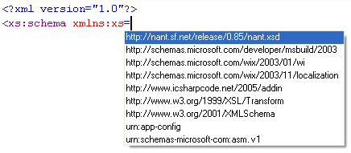
On typing the = character, after the xmlns attribute, a list of namespaces will be shown. A namespace in the list can be selected in a similar way to code completion by using the up and down cursor keys, or by typing in the first few characters of the namespace, and then pressing the Tab key to insert the namespace.
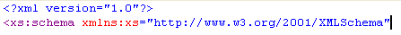
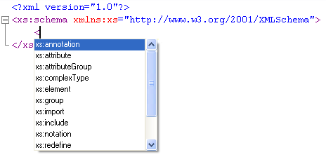
On typing an opening tag a list of elements that can be added at the current location will be displayed.
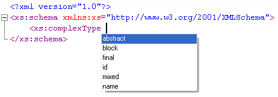
On typing a space character after an element name a list of attributes for that element will be shown. Inserting the attribute will also insert the attribute value quotes ready for you to type in its value.
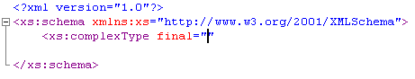
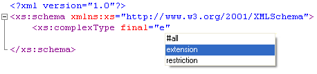
On typing the first character of the attribute value a list of possible values, as inferred from the schema, are displayed.
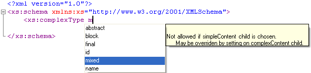
If the schema contains any annotation then this will be displayed.
To validate an xml document against its schema, first associate a namespace with it using the xmlns attribute, then from the XML menu select Validate XML.
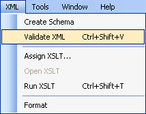
Errors will be shown in the Output window and the Errors window.
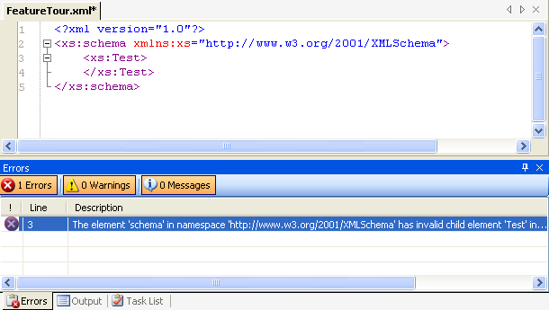
Clicking an entry in the Errors window will move the cursor to the position of the error.
The XML schemas that SharpDevelop is aware of can be viewed and configured from the options dialog box. From the Tools menu select Options..., expand the Text Editor category and select XML Schemas.
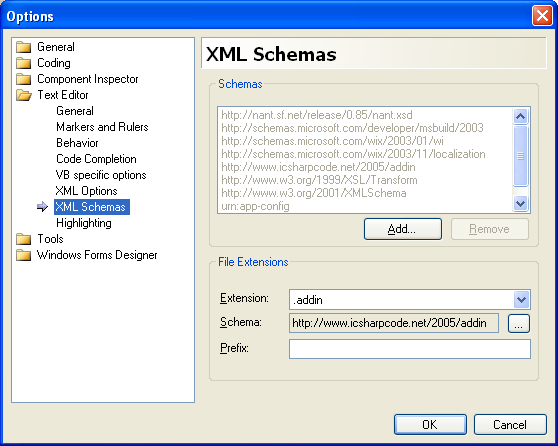
In the Schemas group box schemas that have been added by you are highlighted in black text. System schemas, those that are installed with the XML Editor, are displayed in grey text. Only schemas that have been added by you can be removed. Clicking the Add button opens up the open file dialog allowing you to browse to an .xsd file and add it.
The File Extensions group box shows default associations between a file extension and a schema. For example, .build files could be associated with a NAnt schema, then whenever a .build file is opened it automatically gets XML completion for that schema without having to specify an xmlns attribute. Specifying an xmlns attribute will override the default schema association. To associate a schema with an xml file extension click the browse button 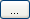 and select a schema from the list.
The Prefix text box is used to specify the default namespace prefix associated with an xml element. This prefix will be used in the completion list (eg. "xs:schema").